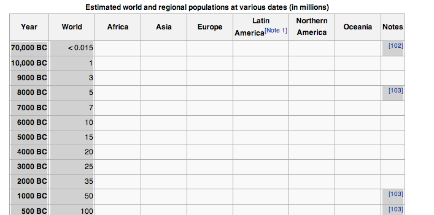

Don't confuse with data

9.00 Intro 9.05 A design principle 9.10 Grabbing & transforming your data 9.30 With data, decide on and sketch design 10.30 Break 11.00 Learning: d3 12.30 Lunch 13.30 Build with d3 15.00 Break 15.30 Three.js & adding the z-axis 16.00 Continue with visualisations
Hands on - you'll have a data visualisation done by the end of the day.
d3 is BIG.
3D graphics is BIGGER.
Data visualisation is a contact sport - emphasis on coding.
First get some data you're interested in
Clean it up, investigate it
Design a visualisation around it
I'll introduce d3.js and take you through lots of examples
Break for lunch
Come back and build with d3.js until afternoon break
I'll introduce three.js
Continue with d3
or add three.js
or make a wholly 3D viz!
I'll take questions after each tech intro
I'll wander around during the build sessions to help
Any questions before we begin?
9.00 Intro 9.05 A design principle 9.10 Grabbing & transforming your data 9.30 With data, decide on and sketch design 10.30 Break 11.00 Learning: d3 12.30 Lunch 13.30 Build with d3 15.00 Break 15.30 Three.js & adding the z-axis 16.00 Continue with visualisations
Could easily create the 400% visually, 13% actually with inappropriate scale.
Good heuristic: do the visual cues match the story in the data?
Oh, and it's double counting. In two places. Maybe not a mistake then...
Know your data before you design
Let's walk through an example of getting & preparing it
Lot of interesting data and argument
However - hard to take in via prose
14,000 BCE 4.36 0.00 0.00 0.00 4.36 13,000 BCE 4.36 0.00 0.00 0.00 4.36 12,000 BCE 4.90 0.00 0.00 0.00 4.90 11,000 BCE 5.45 0.00 0.00 0.00 5.45 10,000 BCE 5.45 0.00 0.00 0.00 5.45 9000 BCE 5.99 0.00 0.00 0.00 5.99 8000 BCE 6.54 0.00 0.00 0.00 6.54 7000 BCE 7.08 0.01 0.00 0.00 7.09
http://en.wikipedia.org/wiki/World_population
70,000 BC < 0.015 [102] 10,000 BC 1 9000 BC 3 8000 BC 5 [103] 7000 BC 7 6000 BC 10
pbpaste |
awk 'BEGIN { OFS="\t"; FS="\t" } {print $1,$2}' |
sed 's/\([0-9,]+\) BC/-\1/g' |
sed 's/AD //' |
tr -d ","
Normalised dates
-70000 < 0.015 -10000 1 -9000 3 -8000 5 -7000 7 -6000 10
Like superheros, each little program has a superpower
Combine little programs to do complex things
Programs can form pipelines
Pipes take thing out and send them out
$ program_a | program_b | program_c
from program_a -> program_b -> program_c
result = program_c(program_b(program_a()))
Clipboard to/from command line
Grab straight from PDF/Wikipedia
Linux with XWindows
alias pbcopy='xclip -selection clipboard' alias pbpaste='xclip -selection clipboard -o'
Copy from Wikipedia/PDFs/HTML tables
pbpaste > file_name.tsv
Then process via tools
Shows no mercy to tables
BEGIN and END blocks at start and end of program; init teardown
Program lines are in
/pattern/ { action }
NR > 1 { print } // skip first line, print all cols
/2012-10/ { print } // only w/ October this year
{ print $1,$2,$5 } // first, 3rd and 5th col
{ $2=$3=""; print } // remove 2nd and 3rd col
BEGIN { FS=";" OFS="\t" } { print } // ; in, \t out
tr - substitute or delete characters
tr "\n" "\t" // newlines with tabs tr -d "" // remove all tabs tr '[a-z]' '[A-Z]' // uppercase
Edits streams of text (stream-edit)
sed 's/\([0-9,]+\) BC/-\1/g' // replace 6000 BC with -6000 sed 's/AD //' // cut out AD
Pretty useful for citing sources
Non-technical people can curate
JSONP API (slightly awkward)
https://spreadsheets.google.com/feeds/list/0AmE0pIAjxxOvdEo1QmxBMUd6YWpkbXpPdkpLRmNUSnc/od6/public/basic?alt=json-in-script&callback=?
Grab some data you'd like to use
With your new unix-fu it can be messy
Friendly (JSON) sources of data:
What is your data saying?
What questions does it raise, can it answer?
Feel free to form groups.
Till 10.30 break
Toolkit for visualisations, not lots of prebaked ones.
Definitely not a charting library.
Don't invent a proprietary API - use SVG, HTML.
e.g You'll see
<g>
elements just like in SVG
You can use what you learn about SVG, HTML and CSS everywhere.
Mobile friendly (DOM: everywhere, SVG: iOS, Android Browser 3.0+).
Less to learn - not a big scary black box.
Use new CSS, HTML and SVG features whenever they're available.
d3.select("body")
.append("h2")
.text("foo")
.transition()
.style("color","red");
d3.select("p")
.style("font-size","2em")
.append("span")
.text("I'm a span in a paragraph");
Just like jQuery, we can keep calling methods on the same elements.
If we create new elements via append, the context of our chain becomes the new elements.
Use
transition()
to apply changes over time.
d3.selectAll("input")
.on("change",function(data,index) {
// event handler
});
Again, very similar to jQuery,
this
being DOM the element.
But what are those `data` and `index` parameters...?
In the code for the comparison, before we have any data we select all divs.
Why are we binding to elements that don't exist?
var sections = d3.select("#demo1")
.append("div")
.classed("graphs",true)
.selectAll("div")
Why isn't this a waste of time?
d3 has data and elements - Model and View
It computes a 'join' - the intersection between the data and the elements
enter()
new data which doesn't yet have an element
data()
immediately after data call, elements with existing data that has changed
exit()
elements that no longer have data
Three types - new data, change in values, data leaving
Updates apply when you have both an element and a datum
d3.selectAll("div") // 1 div
.data([1,2,3,4])
// will act on the first div, passing 1
.text(function(d) {
return "I'm updating " + 1 // I'm updating 1
})
New data that doesn't fit into the current selection goes into enter
d3.selectAll("div") // 1 div
.data([1,2,3,4])
d3.enter() // will act on [2,3,4], appending 3 divs
.append("div")
Elements that no longer have a datum will go into exit
d3.selectAll("div") // 5 divs
.data([1])
d3.exit() // will affect the other 4 divs, removing them
.remove()
Most of the d3 selection methods take a function
Function will be passed datum and index, and return value is assigned
d3.selectAll("div")
.data(data)
.enter()
.text(function(d,i) {
return d.text
})
.transition()
.delay(function(d,i) {
return i * 1000
});
If we change data, we need a way for d3 (and us) to know it's actually referring to the same thing.
Initially datums are identified by index - if we change order, filter etc this breaks.
Key fn solves this, identifying that a value is not new, but has moved.
var data = [
{"name":"jquery", data: [["dom",1], ["svg",0], ["data",0], ["open",0.7 ]]},
{"name":"d3", data: [ ["dom",0.8], ["svg",1], ["data",1], ["open",1 ]]},
{"name":"highcharts", data:[ ["dom",0], ["svg",1], ["data",1], ["open",0 ]]},
{"name":"raphael", data: [["dom",0], ["svg",1], ["data",0], ["open",0.5 ]]},
{"name":"processing", data:[ ["dom",0], ["svg",0], ["data",0.5], ["open",0.2 ]]}
];
var sections = d3.select("#demo1")
.append("div")
.classed("graphs",true)
.selectAll("div").data(data,pluck("name"))
We can also reflect a hierarchical set of data in elements
var sections = d3.select("#demo1")
.append("div")
.classed("graphs",true)
.selectAll("div")
.data(data,pluck("name"))
// ... enter code
var innerSections = sections.enter().append("div")
// 'inner join' - values in each of above datums
.selectAll("div")
.data(pluck("data"));
In our framework comparison we had a set of 5 frameworks each with 4 attributes
var sections = d3.select("#demo1")
.append("div")
.selectAll("div")
.data( frameworks )
var enter = sections.enter()
.append("div") // 5 divs
var innerSections = enter.selectAll("div")
.data(pluck("attributes"))
.enter()
.append("div") // 4 divs for each of original
// 20 divs in all, 5 x 4
Don't need to include jQuery - has facilities to load CSV, JSON etc
d3.csv(url,function(csv) {
// remember to parse your data - csv is stringly typed
});
d3.json(url,function(tastyData) {
});
Since d3 supports only a subset of browser, we should have the JS 1.6 array methods - `filter`, `map`, `reduce` etc
d3 gives us similar functionality to underscore.js - `nest` for `_.groupBy` etc
Lots of other useful methods - `d3.extent` gives max and min - API docs worth a read
d3 can create our scales, so we don't need to.
var mapping = d3.scale.linear() .domain([d3.min(data), d3.max(data)]) .range([0,VISUAL_SIZE_DESIRED]);
Has built in colour scales that look lovely
domain([min,max])
is the range of input values in our data
range([min,max])
is a visual representation of that domain
We map between them
Can be a range of colours, discrete, or custom
d3.scale.log()
for diverse, potentially exponential values
d3.scale.sqrt()
for diverse, positive and negative values
d3.scale.category10()
nice category colours
Simple colour scale with steps.
var data = [0.05,0.1,0.1,0.1,0.1,0.1,0.45];
var colors = d3.scale.linear().domain([0,data.length - 1]).range(["#69C7FF","#3593E6"]);
d3.select("#menu").selectAll("li").data(data)
.append("div")
.style("background",function(d,i) { return colors(i) });
Pure data: they don't do the laying out for you
Most generic part of a layout is the algorithm to decide relative sizes/positions, that's what d3 gives you.
Bound to the data, accessed as if you had a `dx` and `dy` in your data.
var randomData = d3.range(1000)
.map(d3.random.irwinHall(10));
var width = 800, height = 500, padding = 10;
var x = d3.scale.linear()
.domain([0, 1])
.range([0, width]);
var data = d3.layout.histogram()
.bins(x.ticks(20))
(randomData);
var y = d3.scale.linear()
.domain([0, d3.max(data, function(d) { return d.y; })])
.range([0, height]);
var svg = d3.select("#histogram-1").append("svg")
.attr("width", width)
.attr("height", height);
svg.selectAll("rect")
.data(data)
.enter()
.append("rect")
// move elements down by the difference between their output and height - 0% needs to move down 100%
.attr("transform", function(d) { return "translate(" + x(d.x) + "," + (height - y(d.y)) + ")" })
.attr("width", x(data[0].dx) - padding)
.attr("height", function(d) { return y(d.y); });
d3.select|selectAll()
to select elements
.data(data,keyFn)
to bind data, returns update
.enter() .exit()
to control data in and out
Scales to map data value to visualisation
Layouts to do the generic work of various visualisations
Anything that you'd be worried about getting d3 on the page?
Working with the DOM or SVG?
Binding data?
Getting data onto the page?
Using scales or layouts?
Till 15.00 break
Ask me for any help about d3, Javascript, terminal
Use with restraint - more distraction
Can easily get 3 dimensions into a graph - contour or colour
Renderer
draws - can be WebGL, Canvas
Camera
our point of view within a scene - it can move
Scene
a 'scene graph' of JS objects in the scene
Mesh
a combination of Geometry - a 3d shape - and a material
Material
a texture or simple colour to cover a Geometry
var container = document.querySelector(sel); var fieldOfView = 45, nearClip = 0.1, farClip = 10000; var width = 600, height = 600, aspectRatio = width/height; var renderer = new THREE.WebGLRenderer(); var camera = new THREE.PerspectiveCamera( fieldOfView, aspectRatio, nearClip, farClip ); camera.position.z = 100; var scene = new THREE.Scene(); renderer.setSize(width,height); container.appendChild(renderer.domElement);
var cubey = new THREE.Mesh(
new THREE.CubeGeometry(25, 25, 25),
new THREE.MeshBasicMaterial({
color: 0x0000CC
})
);
scene.add(cubey);
// actually draw the scene
// from the point of view of our camera
renderer.render(scene,camera);
Using
requestAnimationFrame
: a souped up
setInterval
var tick = function(t) {
requestAnimationFrame(tick);
cubey.rotation.y = t/1000;
renderer.render(scene,camera);
};
tick();
var cubey = new THREE.Mesh(
new THREE.CubeGeometry(25, 25, 25),
new THREE.MeshPhongMaterial({
color: 0x0000CC
})
);
scene.add(cubey);
var light = new THREE.PointLight();
light.position.x = 50;
light.position.y = 50;
light.position.z = 25;
scene.add(light);
// create scales like normal - data to visual range
d3.scale.linear()
.domain(d3.extent(_.pluck(data,key)))
.range([0,rangeMax]);
// here we're mapping 3 variables to x,y,z, using scales
[["impressions","x"],["clicks","z"],["orders","y"]].forEach(function(pair) {
var key = pair[0], dim = pair[1];
point.position[dim] = scales[key](datum[key]);
});
Our objects are Meshes with Materials (non-Basic for light) and Geometry
We look at a Scene of Objects via a Camera
The scene is drawn by a Renderer from the POV of a Camera
Using requestAnimationFrame and Clock we can animate
Nothing to stop us using d3 for data
Continue with existing 2D animations, or go 3D